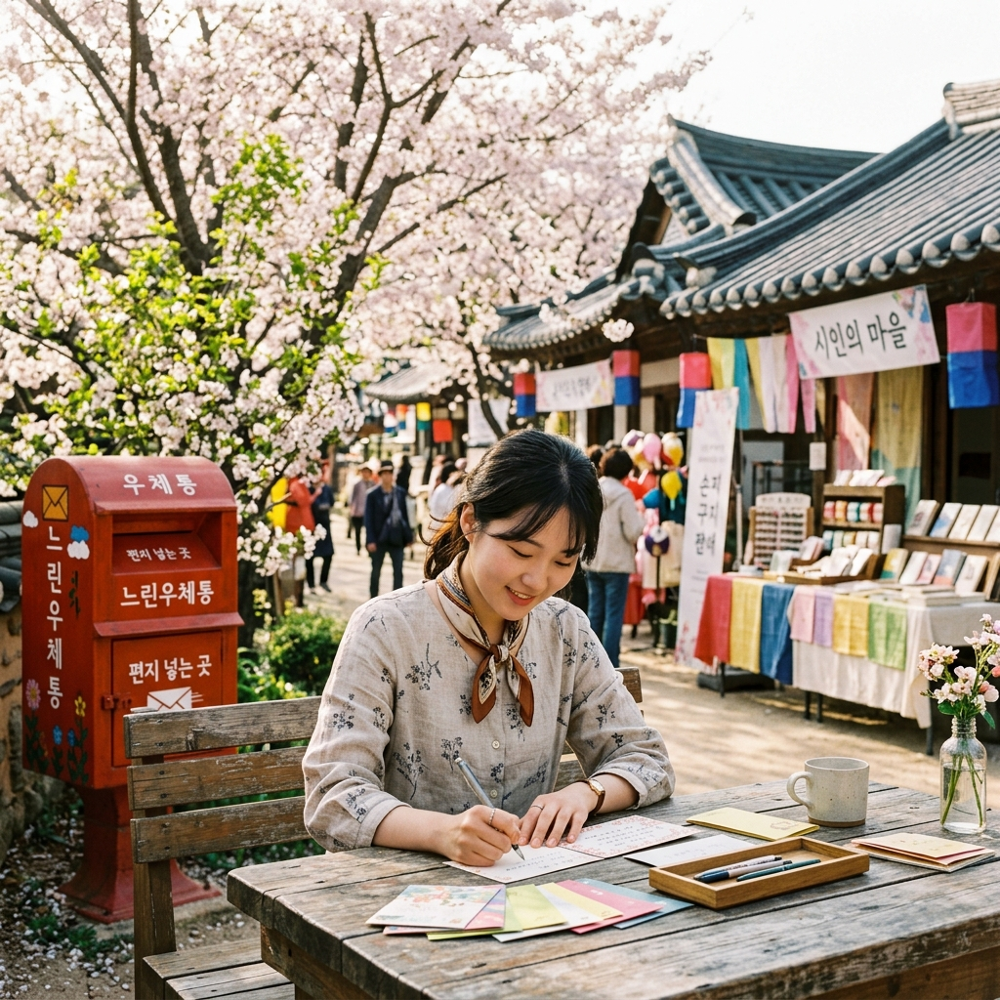

옥천 지용제 2026 — 정지용 시인의 고향에서 열리는 제39회 문학 향수 축제 완전 가이드
📝 국내여행충북 옥천2026.05.14~17
"넓은 벌 동쪽 끝으로 / 옛이야기 지줄대는 실개천이 회돌아 나가고…" — 정지용의 시 「향수」는 국어 교과서를 거친 사람이라면 누구나 마음 속 어느 구석에 새겨진 구절입니다. 그 향수의 시인, 정지용이 태어난 곳이 바로 충청북도 옥천입니다.
제39회 지용제가 2026년 5월 14일(목)부터 17일(일)까지 4일간 옥천 구읍 일원에서 '詩끌북적 문학축제'를 주제로 열립니다. 문학 공모전과 시낭송, 감성 체험, 향수마을 스탬프투어까지 어우러진 이 축제는 단순한 지역 행사를 넘어, 한국 문학의 뿌리를 짚어보는 특별한 여행의 장입니다.
| 항목 | 내용 |
|---|
| 행사명 | 제39회 지용제 — 詩끌북적 문학축제 |
| 일정 | 2026년 5월 14일(목) ~ 17일(일) 4일간 |
| 장소 | 충청북도 옥천군 옥천읍 구읍 일원 (정지용문학관, 향수마을 등) |
| 입장료 | 무료 (일부 체험 프로그램 소정 비용) |
| 문의 | 옥천군 문화관광과 043-730-3225 / 지용제 공식 홈페이지 gy-festival.okcc.or.kr |
| 교통 | KTX 옥천역 하차 후 택시 약 10분 또는 시내버스 이용 |
📜 정지용과 옥천 — 「향수」의 탄생지를 찾아서
정지용(1902~1950)은 충청북도 옥천에서 태어나 서울과 일본 유학을 거쳐 한국 현대시의 선구자가 된 시인입니다. 그의 시 「향수」는 1927년 동지사 영문과 재학 시절 발표된 것으로, 고향 옥천의 풍경과 유년의 기억을 서정적으로 담아냈습니다.
넓은 벌 동쪽 끝으로
옛이야기 지줄대는 실개천이 회돌아 나가고,
얼룩백이 황소가
해설피 금빛 게으른 울음을 우는 곳,
— 그곳이 차마 꿈엔들 잊힐리야.
— 정지용, 「향수」 중에서 (1927)
정지용의 고향 집이 있던 옥천 구읍의 실개천과 넓은 들판은, 시 속에 묘사된 풍경과 놀라울 정도로 일치합니다. 실제로 옥천군은 이 지역을 '향수마을'로 조성하여, 시인의 생가를 복원하고 일대를 문학 테마 거리로 꾸몄습니다. 여기를 걷다 보면 국어 교과서 속 시가 입체적으로 살아나는 신기한 경험을 하게 됩니다.
정지용은 단순히 「향수」의 시인에 그치지 않습니다. 그는 김소월과 함께 한국 근대시의 양대 산맥으로 꼽히며, 이상(李箱)과 윤동주를 문단에 이끌어낸 멘토이기도 합니다. 일제강점기의 혹독한 검열 속에서도 한국어의 아름다움을 극한까지 끌어올린 언어 장인, 그것이 정지용입니다.
정지용 시 「향수」의 배경, 옥천 구읍의 실개천과 들판 / AI 제작 이미지
📅 제39회 지용제 2026 — 일정별 주요 프로그램
2026년 제39회 지용제는 '詩끌북적 문학축제'를 테마로 문학과 공연, 체험이 어우러진 4일간의 프로그램으로 구성됩니다.
| 날짜 | 대표 행사 |
|---|
| 5월 14일(목) | 개막식 및 개막 공연, 제32회 지용신인문학상 시상식 |
| 5월 15일(금) | 제25회 전국 정지용 백일장, 제13회 전국 시낭송대회 |
| 5월 16일(토) | 제9회 정지용 국제문학심포지엄, 시인의 정원(청소년 문학교류) |
| 5월 17일(일) | 폐막 공연 및 시상식, 향수마을 스탬프투어 마감 |
4일간 공통으로 운영되는 상시 프로그램으로는 느린우체통 엽서쓰기, 향수마을 스탬프투어, 릴레이 詩쓰기 코너, 추억의 문방구·향수다방 운영 등이 있습니다.
🏆 문학 프로그램 1 — 전국 정지용 백일장
지용제의 가장 상징적인 프로그램은 제25회 전국 정지용 백일장입니다. 전국에서 문학을 사랑하는 초·중·고등학생부터 일반부까지 참가하여 시와 산문을 짓는 현장 문학 대회입니다.
백일장 장소는 정지용 생가 앞 마당과 향수마을 일대로, 5월 봄날의 옥천 풍경을 배경으로 직접 시를 쓰는 경험은 매우 특별합니다. 나태주 시인이나 도종환 시인 같은 저명한 문인들이 심사위원 또는 특강 강사로 참여하는 경우가 많아, 현직 시인의 조언을 직접 들을 수 있는 기회이기도 합니다.
참가 신청은 지용제 공식 홈페이지(gy-festival.okcc.or.kr)에서 사전에 접수합니다. 당일 현장 접수도 가능하나, 인원 제한이 있으므로 사전 접수를 강력히 권장합니다.
🎙️ 문학 프로그램 2 — 전국 시낭송대회
제13회 전국 정지용 시낭송대회는 정지용의 시 또는 지정 시편을 암송하고 낭독하는 예술적 경연입니다. 단순히 외워서 읽는 것이 아니라, 시 속의 감정과 운율을 어떻게 몸으로 표현하느냐가 평가의 핵심입니다.
낭송 무대는 정지용문학관 앞 야외 무대에서 진행되며, 관객들은 자유롭게 관람할 수 있습니다. 낭송자의 목소리와 시의 언어, 그리고 5월 봄 하늘이 어우러지는 장면은 지용제만의 고유한 정서를 만들어냅니다. 참가 신청은 사전 온라인 접수로 진행되며, 초등부·중학부·고등부·일반부로 나뉩니다.
📮 감성 체험 — 느린우체통과 추억의 문방구
지용제에서 놓쳐선 안 될 체험은 느린우체통 엽서쓰기입니다. 지금 여기 옥천에서 쓴 엽서가 1년 후 자신이나 소중한 사람에게 배달되는 특별 우체통 서비스입니다. 정지용의 시 구절을 인용하거나, 자신만의 짧은 시를 써서 부치는 사람들이 많습니다.
엽서와 편지지는 현장에서 구입할 수 있으며, 도장 찍기나 엽서 꾸미기 스티커 등도 함께 제공됩니다. 축제장 안의 '추억의 문방구' 부스에서는 1970~80년대 학창 시절 감성의 문구류와 군것질 거리를 판매합니다. 어른들에게는 동심으로의 시간 여행, 아이들에게는 신기한 구경거리가 됩니다.
향수다방도 꼭 들러보세요. 레트로 인테리어로 꾸민 임시 다방에서 쌍화차와 유자차를 마시며 시 한 편을 읽는 시간은, 디지털 세상에서 잠시 아날로그로 돌아가는 느린 쉼을 선사합니다.

지용제 느린우체통 엽서쓰기 체험 / AI 제작 이미지
🏛️ 정지용문학관 관람 가이드
지용제 축제장의 중심이자, 옥천 방문의 핵심인 정지용문학관은 시인의 생애와 문학 세계를 체계적으로 전시하는 공간입니다. 무료 입장으로 운영되며, 다음 전시 구성으로 이루어집니다.
| 전시 구역 | 내용 |
|---|
| 생애 연보 전시실 | 정지용의 탄생부터 활동, 실종까지 생애 전 과정 연대기 전시 |
| 시 낭독 체험관 | 「향수」를 포함한 주요 시편 음성 낭독 체험 키오스크 |
| 육필 원고 및 희귀 자료 | 정지용의 육필 원고와 초판본, 당시 잡지 원본 등 전시 |
| 문학 인맥 전시 | 이상(李箱), 윤동주와의 관계 및 동시대 문인 교류 기록 |
| 정지용 생가 | 문학관 인근 복원된 생가. 실개천이 흐르는 향수마을 입구 |
💡 관람 팁
문학관 내 기념품숍에서 정지용 시집(여러 출판사 버전)과 엽서, 시 문구류를 구매할 수 있습니다. 「향수」 구절이 새겨진 머그컵과 메모지는 의미 있는 기념품으로 인기가 많습니다. 축제 기간 외에도 연중 운영하며, 입장 무료입니다.
🍵 옥천 구읍 먹거리 — 향수마을 미식 탐방
옥천 구읍에는 소박하지만 진한 맛이 있는 향토 음식들이 남아 있습니다. 축제와 함께 즐기기 좋은 옥천 대표 먹거리를 소개합니다.
옥천 지리닭국: 옥천 지역 전통 방식으로 오랜 시간 푹 고아낸 닭 육수 기반 국밥입니다. 지리(地利)라는 이름처럼 지역 특산 채소가 들어간 깊은 국물 맛이 특징입니다. 구읍 시장 안 노포에서 먹는 것이 가장 정통입니다.
올갱이국: 옥천 지역을 비롯한 금강 유역의 대표 향토 음식입니다. '올갱이'는 우리말로 다슬기를 뜻합니다. 금강 상류 청정 다슬기를 넣어 끓인 얼큰한 국으로, 해장 효과로도 유명합니다. 시원하면서도 구수한 맛이 함께 느껴지는 충청도 특유의 국물 요리입니다.
향수 막걸리: 정지용 시인의 이름을 빌린 옥천 로컬 막걸리입니다. 은은한 단맛과 청량감이 있으며, 지용제 기간 중 행사장 곳곳의 부스에서 시음 및 구매할 수 있습니다. 기념품으로 한 병 챙겨가기 좋은 아이템입니다.
🚂 교통 & 숙박 안내
| 교통 수단 | 경로 |
|---|
| KTX (추천) | 서울역 → 옥천역 KTX 약 50분 (청주 경유). 옥천역에서 택시 약 10분 또는 시내버스 이용 |
| 자동차 | 경부고속도로 옥천IC 하차 → 구읍 방향 약 10분. 축제 기간 임시 주차장 운영 (옥천군 공지 확인) |
| 시외버스 | 서울 동서울터미널 → 옥천 약 2시간 20분 |
숙박 옵션: 옥천 구읍 내 소규모 게스트하우스와 모텔이 있으며, 청주시에서 당일치기로 방문하는 것도 충분히 가능합니다. 대전에서 차로 약 30분 거리이므로, 대전 숙박 후 당일 방문하는 패턴도 인기 있습니다.
🗺️ 옥천 당일치기 코스 — 지용제 + α
[오전 10시] KTX 옥천역 도착 → 택시로 구읍 이동 (약 10분)
[오전 10시 30분] 정지용 생가 관람 → 향수마을 스탬프투어 시작
[오전 11시] 정지용문학관 관람 (약 1시간)
[낮 12시] 옥천 구읍 시장 내 올갱이국 또는 지리닭국으로 점심
[오후 1시 30분] 전국 정지용 백일장 또는 시낭송대회 관람 (5월 15일 해당)
[오후 3시] 느린우체통 엽서쓰기 체험 + 향수다방에서 차 한 잔
[오후 4시 30분] 추억의 문방구 구경 + 향수 막걸리 기념품 구매
[오후 5시] 옥천역으로 이동, KTX 서울 귀환
제39회 지용제 야외 문학 행사 전경 / AI 제작 이미지
⚠️ 방문 전 체크리스트
⚠️ 주의사항
5월 중순 옥천은 낮에 따뜻하지만 일교차가 있을 수 있습니다. 백일장·시낭송 대회 등 야외 행사에 참가한다면 자외선 차단제와 가벼운 겉옷을 챙기세요. 구읍 내 주차 공간이 한정되어 있으므로 대중교통 이용을 권장합니다.
- 정지용 시집 한 권을 미리 읽고 가면 현장감이 배가됩니다
- 백일장·시낭송대회 참가자는 사전 온라인 접수 필수
- 느린우체통 엽서는 수신인 주소를 미리 적어두면 현장에서 빠르게 참여 가능
- 향수다방 좌석 수가 적으므로 평일 방문이 더 여유로움
- 옥천역에서 구읍까지 택시 이용 시 약 7,000~9,000원 예상
#지용제2026
#옥천지용제
#정지용시인
#향수마을
#옥천여행
#문학축제
#충북여행
#느린우체통
#전국백일장
#정지용문학관